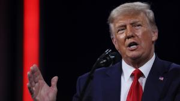
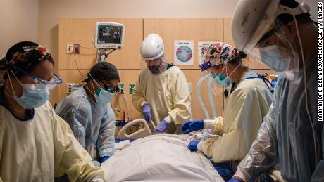
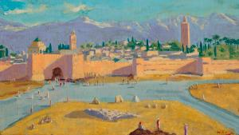
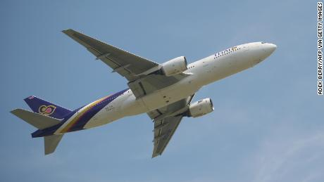

Today's News
Trump is facing probes from 5 independently elected investigators
(CNN)Five independently elected investigators have turned their attention to former President Donald Trump, a sign his legal woes are mounting as he no longer enjoys the protections once afforded to him by the Oval Office. Trump is now facing inquiries run by elected officials from Georgia to New York to Washington with only their constituents to answer to. Most are Democrats, but one key investigation was launched by a Georgia Republican who has faced heavy criticism from Trump since the election. And the former President's actions on his way out of office, including his attempts to overturn the 2020 election results and to stir up his supporters with baseless claims of fraud until they stormed the US Capitol on a harrowing January day, have only added to his legal problems.
All our recent progress with Covid-19 could be wiped out by variants
(CNN)The US is at risk of losing all its recent gains in the battle against Covid-19 as highly contagious variants take advantage of Americans getting lax with safety measures. "Please hear me clearly: At this level of cases with variants spreading, we stand to completely lose the hard-earned ground we have gained," said Dr. Rochelle Walensky, director of the US Centers for Disease Control and Prevention. After weeks of tumbling case numbers, new infections are on the rise again -- about 2% more this past week compared to the previous week, Walensky said Monday. "Similarly, the most recent seven-day average of deaths has also increased more than 2% ... to nearly 2,000 deaths per day."
Rare Winston Churchill painting sold by Angelina Jolie
Arare Winston Churchill painting that was gifted to US President Franklin D. Roosevelt during World War II and eventually made its way into actor Angelina Jolie's collection has become the most expensive painting by the former British prime minister to sell at auction, fetching nearly £8.3 million ($11.5 million) after fees. The work, "Tower of Koutoubia Mosque," was sold March 1 by the Jolie Family Collection and features the long shadows and warm tones of a sunset in Marrakech, Morroco -- a favorite subject of Churchill's to paint.
When can we go on vacation again? Here's what the experts say
(CNN) — After reaching an all-time high in January 2021, global coronavirus case numbers are beginning to drop. Vaccination roll-outs are now underway around the world, but when it comes to the recovery of leisure travel, we're a long way from being out of the woods. While travel experts are optimistic that things will slowly begin to open up again this year, how quickly that happens will depend on where you are, where you want to travel to, and if the virus and its mutant strains are able to be brought under control.